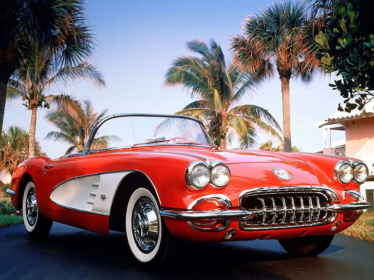
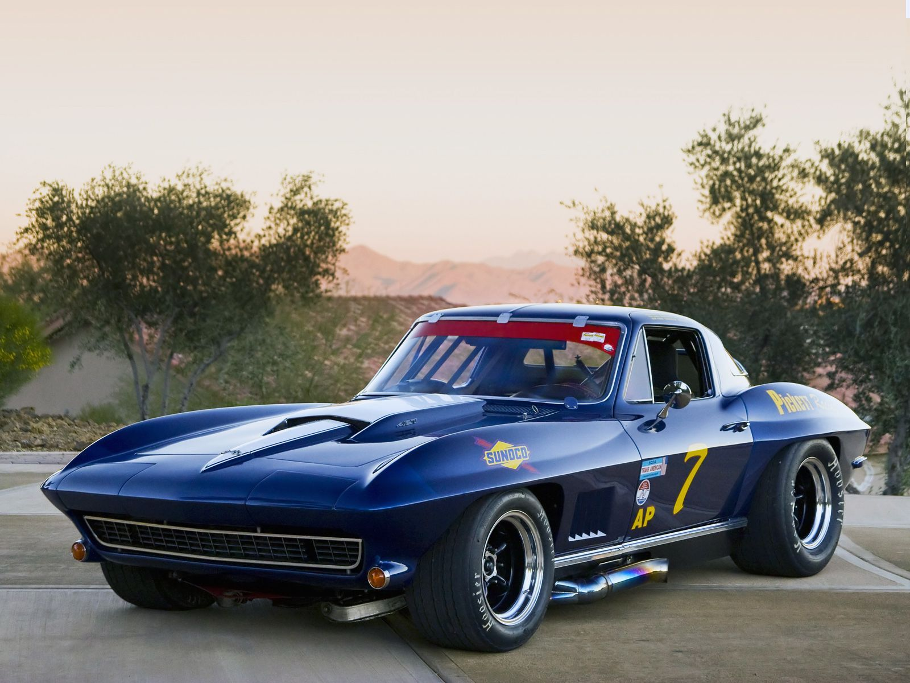
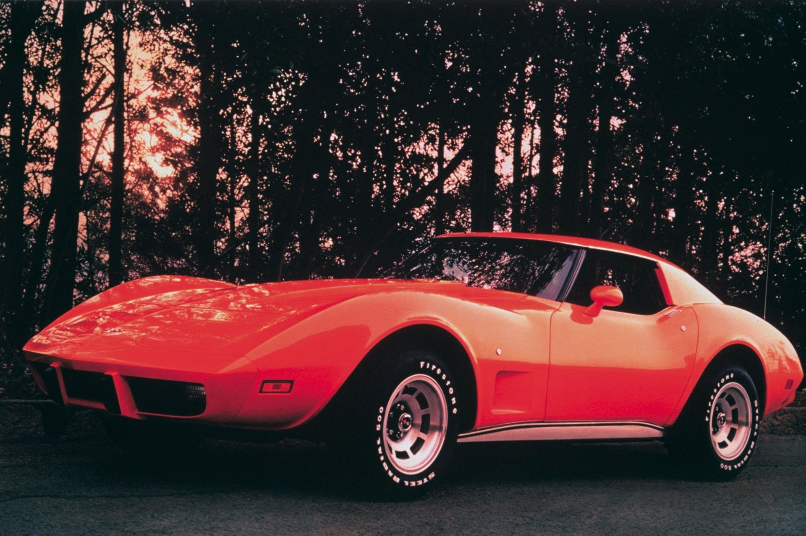
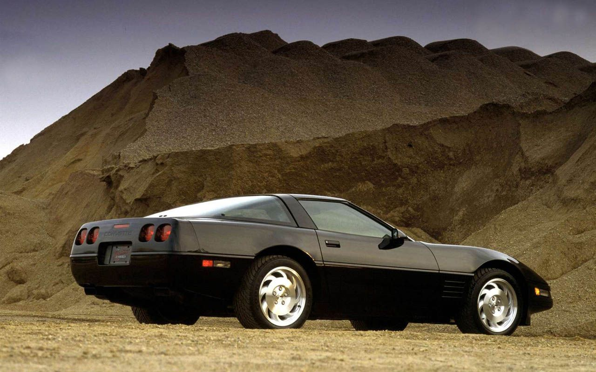
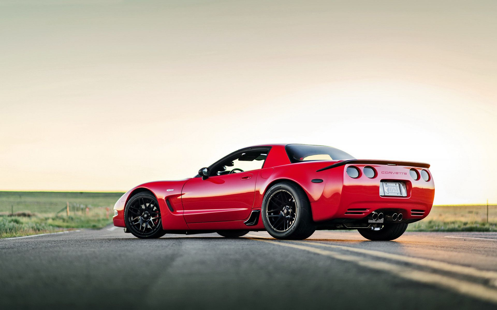
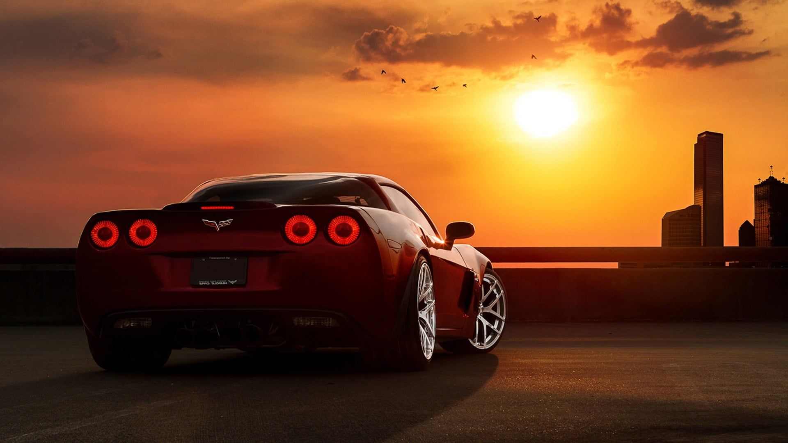
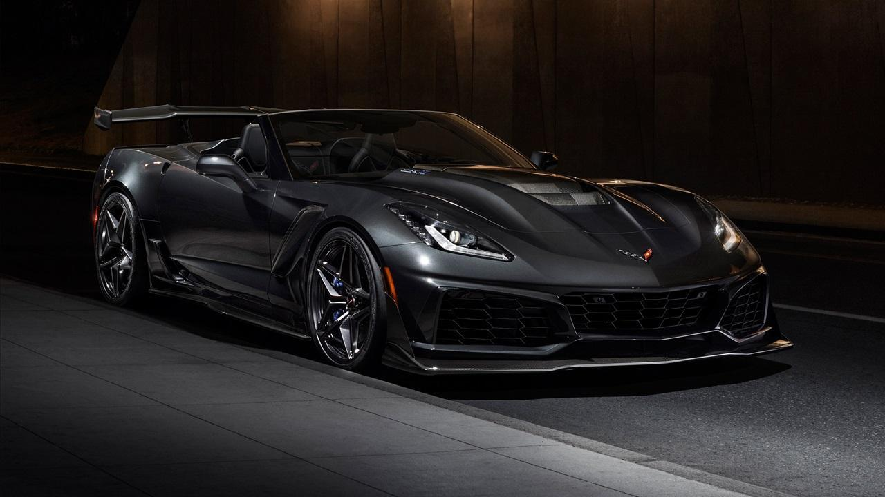
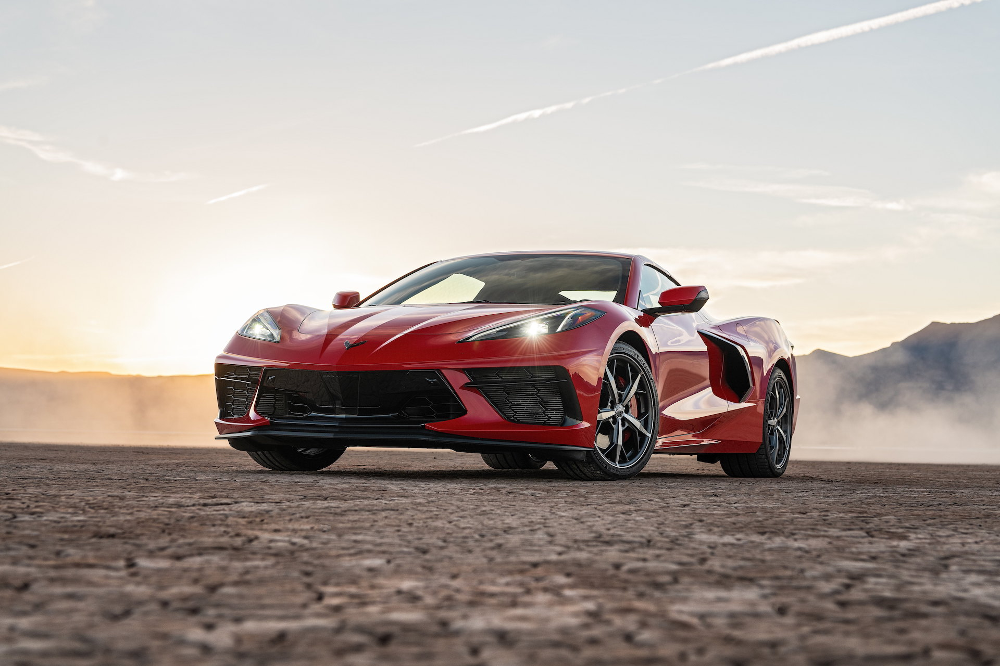

O samochodze
Chevrolet Corvette – samochód sportowy klasy średniej produkowany pod amerykańską marką Chevrolet od 1953 roku.
Od 2020 roku produkowana jest ósma generacja modelu.
Chevrolet Corvette VII został zaprezentowany po raz pierwszy w 2013 roku.
Siódma generacja Corvette przeszła gruntowną zmianę formuły, zyskując nie tylko nowy projekt stylistyczny, ale i nowe proporcje nadwozia.
Lifting
Samochód zyskał znacznie masywniejszą i bardziej muskularną sylwetkę, z dużym wlotem powietrza w przedniej części nadwozia i większymi,
agresywnie zarysowanymi reflektorami. Duże zmiany przeszła tylna część nadwozia, gdzie zachowano motyw podwójnych lamp, które przyjęły
jednak bardziej kanciastą, wielokształtną formę. Pod kątem technicznym, samochód otrzymał nowy silnik LT1 V8 o pojemności 6,2 litra.
W normalnej konfiguracji jednostka ta generuje dokładnie 461 KM oraz 624 Nm momentu obrotowego.
Wersje silnikowe
Dostępne wersje silnikowe w Chevrolecie Corvette to:
-V8 6.0l LS2..
-V8 6.2l LS3.
-V8 7.0l LS7.
-V8 8.2l K-Tech.
-V8 6.2l LT5.
-V8 6.2l LT2.
Wersje wyposażeniowe
Gama samochodów Chevrolet Corvette dostępnych w ofercie od General Motors to:
-Chevrolet Corvette ZR1
-Chevrolet Corvette Z06
-Chevrolet Corvette Roadster

CHEVROLET CORVETTE C1 (1953–1962)

CHEVROLET CORVETTE C2 (1962–1967)

CHEVROLET CORVETTE C3 (1967–1982)

CHEVROLET CORVETTE C4 (1983–1996)

CHEVROLET CORVETTE C5 (1996–2004)

CHEVROLET CORVETTE C6 (2004-2013)

CHEVROLET CORVETTE C7 (2013–2019)

CHEVROLET CORVETTE C8 (2020-TERAZ)
Za powstanie Corvetty odpowiada Harley Earl, miłośnik samochodów sportowych. Oglądając żołnierzy wracających do domu po II wojnie światowej
w Jaguarach czy Alfach Romeo zrodził się pomysł stworzenia Corvetty. Nazwę modelu wymyślił Myron Scott, zainspirowała go nazwa z małych
statków fregatowych, które potrafiły szczególnie szybko manewrować.Premiera pierwszej generacji modelu w formie 2-drzwiowego roadstera odbyła
się latem 1953 roku podczas wystawy Motorama. Nadwozie wykonane z tworzywa sztucznego osadzono na stalowej ramie. Samochód wyróżniał się
dwukolorowym malowaniem nadwozia, a także podłużną maską przednią i ściętym, zaokrąglonym tyłem.
Początkowo do napędu pojazdu służył silnik o pojemności ok. 3860 cm³ i mocy 150 KM, później 195 KM. W 1956 roku po raz pierwszy zaprezentowano
model z przestylizowanym nadwoziem. Cechą charakterystyczną było obłe przetłoczenie za przednim nadkolem. Po raz pierwszy można było zamówić
wersję hardtop (sztywny dach). Pojawiły się również silniki ośmiocylindrowe V8 o mocy 265, a rok później już 283 KM, uzyskane z silnika
wyposażonego we wtrysk paliwa o pojemności około 4640 cm³. W 1958 roku wprowadzono model z podwójnymi reflektorami z przodu. W latach 1958–1960
oferowano ww. silnik, oznaczony od pojemności skokowej 235, w wariantach mocy od 230 do 315 KM. W 1962 roku zaprezentowano silnik 327
(~5360 cm³) o mocy maksymalnej 360 KM.
Podczas 9 lat produkcji pierwszej generacji Chevroleta Corvette, samochód dwukrotnie przeszedł gruntowną restylizację przedniej części
nadwozia. 1955 roku zmienił się kształt wlotu powietrza oraz przedniego zderzaka, z kolei reflektory przyjęły formę okrągłych,
jednokloszowych umieszczonych w błotnikach. Kolejne zmiany wprowadzono w 1957 roku, montując podwójne okrągłe reflektory,
a także niżej osadzoną atrapę chłodnicy.
Chevrolet Corvette II został zaprezentowany po raz pierwszy w 1962 roku.Po raz pierwszy wraz z nową generacją pojawiła się nowa
odmiana nadwoziowa coupe o nazwie Corvette Stingray. Zmodyfikowano ramę, aby była lżejsza, przednie zawieszenie, ale przede
wszystkim całkowicie zmieniono nadwozie, które miało przypominać wyglądem rekina.
Samochód wyróżniał się tylną, panoramiczną szybą przedzieloną środkowym słupkiem, przez który przechodzi przetłoczenie,
idące wzdłuż całego samochodu, imitujące kręgosłup „bestii”. Ze względów bezpieczeństwa nakazano firmie rezygnację z
tego słupka i model na rok 1964 posiada już jednolitą panoramiczną szybę bez charakterystycznego słupka.
Do napędu posłużył silnik 327 V8 o mocy 365 KM. W roku 1966 zastosowano silnik 427, z serii zwanej big-block, o mocach 425–435 KM.
Jednostki były montowane pod podłużną maską.
W ciągu 5 lat produkcji wyprodukowano 117 964 egzemplarze pojazdu.
Chevrolet Corvette III został zaprezentowany po raz pierwszy w 1967 roku.
W pierwszym roku produkcji wariant coupe nie był w jakikolwiek sposób oznaczony, lecz już w 1969 powrócono do nazwy człon Stingray.
Podstawę stylistyczną stanowił prototyp Mako Shark II, uzyskując charakterystyczne proporcje nawiązujące do butelki Coca-Coli
(tzw. coke-bottle design), z wyraźnie zaznaczonymi nadkolami, a także szpiczastą maską przednią..
Podstawę napędu stanowił silnik 327 V8 o mocy 350 KM. W 1970 roku w życie weszła ustawa o czystym powietrzu, narzucająca
producentom ograniczenia emisji substancji szkodliwych, co zmusiło Chevroleta do przeprojektowania gamy jednostek napędowych
także w Corvette. Następnie kryzys paliwowy spowodował obniżanie mocy w stosowanych silnikach, która spadła do 180 KM w
silnikach L48 V8 w latach 1976–1979. Ponownie ze względów bezpieczeństwa w 1975 roku zakończono produkcję roadstera.
W ciągu 14 lat produkcji wyprodukowano 542 741 sztuk pojazdu[15].
Trzecia generacja Chevroleta Corvette w ciągu swojej obecności rynkowej przeszedł liczne zmiany wyglądu zewnętrznego. Pierwsze
pojawiły się już w 1968 roku, przynosząc inny wygląd tylnej części nadwozia, która stała się wypukła. Duże zmiany w wyglądzie
pojawiły się w 1974 roku, przynosząc zmodyfikowany kształt chowanych reflektorów i zderzaka, a także zmodyfikowaną tylną część
nadwozia.
Po 14 latach produkcji poprzednika, prezentując Corvette czwartej generacji Chevrolet przedstawił zbudowaną od podstaw
zupełnie nową konstrukcję opartą o platformę Y-body koncernu General Motors. Samochód zyskał znacznie nowocześniejsze,
bardziej kanciaste nadwozie, które stało się przestronniejsze i masywniejsze.
Samochód zachował kluczowe cechy wyglądu z poprzednika, takie jak chowane reflektory pod prostokątnymi kloszami, a
także podwójne lampy tylne umieszczone w tubalnych, wsuniętych kloszach. Zastosowano także panoramiczną, zagiętą
na kantach tylną szybę, która otwierała się razem z klapą bagażnika. Oprócz roadstera, Corvette C4 było dostępne tym
razem także jako targa.
W 1990 roku Chevrolet przeprowadził obszerną modernizację Corvette C4, która przyniosła zmiany w wyglądzie zarówno przedniej,
jak i tylnej części nadwozia[24]. Przedni zderzak zyskał umieszczone na narożnikach kierunkowskazy i inaczej ukształtowane wloty
powietrza, z kolei tylna część nadwozia otrzymała wypuky, zamiast dotychczasowego wklęsłego, kształt, a także bardziej kanciaste
klosze lamp.
Chevrolet Corvette V został zaprezentowany po raz pierwszy w 1996 roku. Konstruując piątą generację Corvette, Chevrolet zdecydował
się ponownie wykorzystać platformę Y-body stosowaną już w poprzedniku[27]. Pod kątem stylistycznym samochód przeszedł ewolucyjny
zakres zmian, zyskując bardziej zaokrągloną sylwetkę nadwozia, obłe nadkola i ponownie zaokrąglone tylne lampy.
Konstrukcja z nadwoziem z tworzyw sztucznych, oparta na hydroformowanej ramie skrzynkowej jest znacznie lżejsza
od poprzednich a układ transaxle, polegający na umieszczeniu skrzyni biegów na tylnej osi, pomiędzy kołami, powoduje
korzystniejsze rozłożenie mas pomiędzy osie[26]. Napęd stanowił silnik LS1 V8 o pojemności 5665 cm³ i mocy 345 oraz 350 KM.
W 2001 roku pojawił się następca wersji ZR1, model Z06. Do napędu użyto jednostki LS6 o mocy 385 KM a w rok później 405 KM,
połączonej z sześciobiegową manualną skrzynią biegów. Prędkość maksymalna to 275 km/h
Podobnie jak poprzednik, szósta generacja Corvette przeszła ewolucyjny zakres zmian stylistycznych w porównaniu do modelu C5. Największą
zmianą w stylistyce pojazdu był wygląd przedniej części nadwozia, gdzie po raz pierwszy od prezentacji modelu pierwszej generacji pojawiły
się klasyczne, odsłonięte reflektory zamiast dotychczasowych, chowanych pod obrotowymi prostokątnymi kloszami. Samochód zachował jednak inne
charakterystyczne cechy stylistyczne, jak podwójne okrągłe tylne lampy, szpiczasty, podłużny przód, czy panoramiczna, zakrzywiona szyba
tylna.
Przy konstruowaniu tego modelu skupiono się na poprawie własności jezdnych, dostosowując auto do bardziej komfortowego codziennego użytkowania
. Układ transaxle pozostał, lecz tym razem skrzynia przekazuje na koła moc 400 KM wytwarzanych przez silnik LS2 V8 o pojemności 5970 cm³.
Po raz pierwszy również, od 1962 roku zastosowano w tym modelu stałe, niechowane reflektory. Cała sylwetka sprawia wrażenie krótkiej, zwartej
i bardzo szybkiej.
W latach 2006–2013 model Chevrolet Corvette C6 Z06 z silnikiem LS7 o pojemności 7011 cm³ i mocy 512 KM. W latach 2009–2014 model Chevrolet
Corvette C6 ZR1 z silnikiem o pojemności 6162 cm³ LS9 i mocy 647 KM. Sprint do 100 km/h wynosi 3,2 s czyli szybciej niż Ferrari GTO,
a do 200 km/h wynosi 10,9 s. Prędkość maksymalna to 330 km/h.
W ciągu 9 lat produkcji wyprodukowano 215 123 egzemplarze C6.
Siódma generacja Corvette przeszła gruntowną zmianę formuły, zyskując nie tylko nowy projekt stylistyczny, ale i nowe proporcje
nadwozia. Samochód zyskał znacznie masywniejszą i bardziej muskularną sylwetkę, z dużym wlotem powietrza w przedniej części nadwozia
i większymi, agresywnie zarysowanymi reflektorami.Duże zmiany przeszła tylna część nadwozia, gdzie zachowano motyw podwójnych lamp,
które przyjęły jednak bardziej kanciastą, wielokształtną formę. Pod kątem technicznym, samochód otrzymał nowy silnik LT1 V8 o pojemności
6,2 litra[37]. W normalnej konfiguracji jednostka ta generuje dokładnie 461 KM oraz 624 Nm momentu obrotowego.
Podczas Detroit Motor Show 2014 zaprezentowano model Z06. Nieznacznym zmianom poddano wygląd nadwozia. Dodano przedni spliter,
zmieniono grill oraz tylny spoiler. Moc doładowanego mechanicznie silnika V8 LT4 o pojemności 6162 cm³ wynosi 625 KM. Jest to
druga pod względem mocy Corvette w historii. Za przeniesienie napędu odpowiada 7-biegowa automatyczna skrzynia biegów. Opcjonalne
jest zakupienie opcji ZR1. Chevrolet ma zamiar wprowadzić auto do produkcji na początku 2015 roku.
Chevrolet Corvette Z07 debiutował w Europie na salonie genewskim w marcu 2015 roku. Zbudowany w oparciu o aluminiową ramę przestrzenną
samochód napędzany jest doładowanym kompresorem, benzynowym silnikiem V8 o pojemności 6,2 l. Jednostka wyposażona w bezpośredni wtrysk
paliwa i system dezaktywacji cylindrów rozwija moc 659 KM i dysponuje maksymalnym momentem obrotowym 881 Nm. Moc przenoszona jest na koła
tylnej osi za pośrednictwem siedmiostopniowej ręcznej skrzyni biegów.
W maju 2016 roku w mediach motoryzacyjnych pojawiły się pierwsze informacje na temat nowej, ósmej generacji Corvette, donosząc,
że samochód po raz pierwszy w historii przejdzie zmianę formuły i będzie posiadać silnik umieszczony centralnie. Informacje
te potwierdziły się dwa lata później, gdy w 2018 roku Chevrolet rozpoczął pierwsze testy drogowe zamaskowanych, przedprodukcyjnych
egzemplarzy Corvette C8 w nowej formule.
Po licznych zapowiedziach, oficjalna premiera ósmej generacji Chevroleta Corvette odbyła się w drugiej połowie lipca 2019 roku.
W związku ze zmianą koncepcji umieszczenia jednostki napędowej, samochód przeszedł największe w historii zmiany w proporcjach
nadwozia - tym razem to przednia część nadwozia stała się krótka i ścięta na rzecz dłuższego tyłu skrywającego dostęp do silnika.
Corvette C8 zachowało również typowe cechy stylistyczne modelu znane z poprzedników, jak agresywnie zarysowane przednie reflektory
czy podwójne tylne lampy, które podobnie jak w przypadku modelu C7 nie przyjęły już okrągłej formy, lecz wielokątną, kanciastą.
Największą zmianą w kabinie pasażerskiej stał się z kolei kokpit zdominowany przez 12-calowy ekran dotykowy pozwalający na sterowanie
większością funkcji pojazdu.